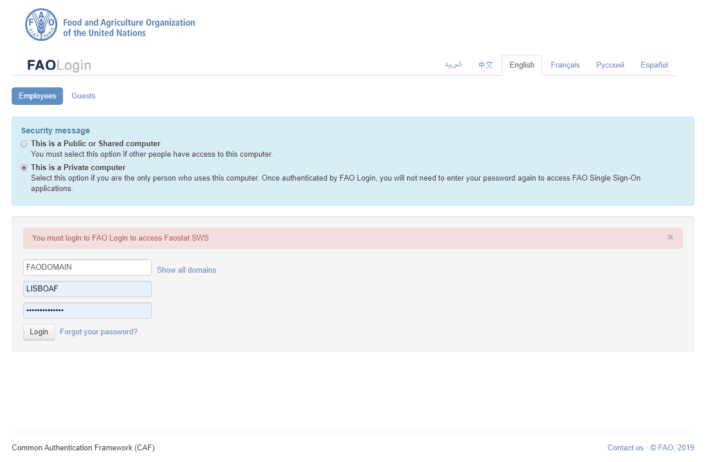
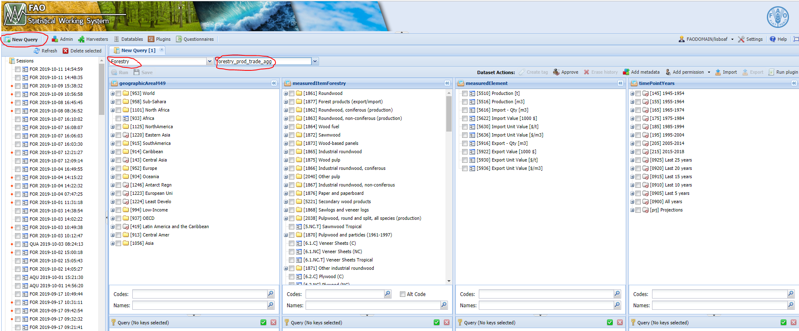
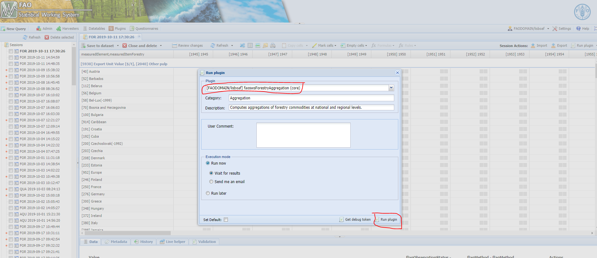
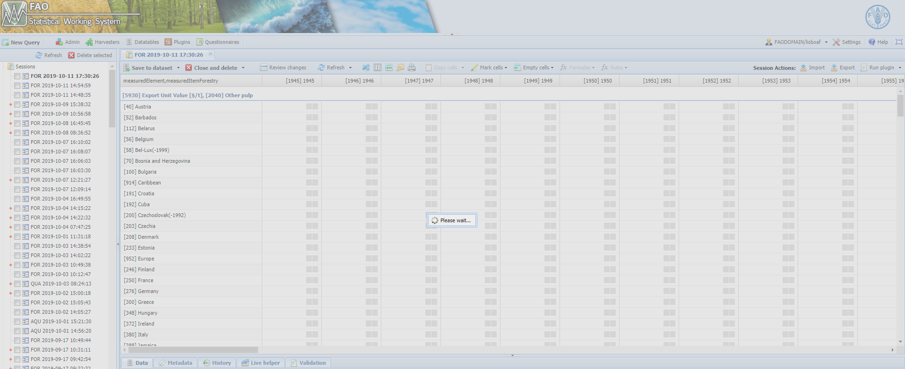
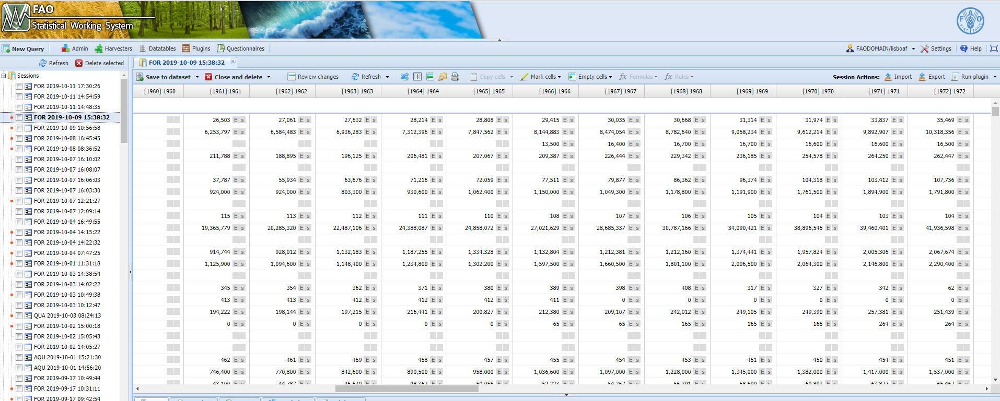

Chapter 1 The faoswsForestryAggregation module
1.1 Aims
The faoswsForestryAggregation module essentially aims at working as a validation tool which is used by the the technical unit to check the effects of data changes in the forestry_prod_trade data set on geographical and commodity aggregations.
1.2 Reads in the input data set and data tables
The module uses the forestry_prod_agg dataset as input. According to the technical unit, they will be constantly changing this dataset throughout the data cycle, specially when new data come in or the officers decide to make changes based on their domain knowledge.
suppressMessages({
library(faosws)
library(faoswsUtil)
library(faoswsFlag)
library(data.table)
library(dplyr)
library(tidyr)
library(stringr)
})
if(CheckDebug()){
library(faoswsModules)
SETTINGS = ReadSettings("~./github/faoswsForestryProduction/sws.yml")
Sys.setenv("R_SWS_SHARE_PATH" = SETTINGS[["share"]])
R_SWS_SHARE_PATH = SETTINGS[["share"]]
SetClientFiles(SETTINGS[["certdir"]])
GetTestEnvironment(baseUrl = SETTINGS[["server"]],
token = SETTINGS[["token"]])
}
if (!CheckDebug()) {
R_SWS_SHARE_PATH = Sys.getenv("R_SWS_SHARE_PATH")
}
### --- READ DATATABLES -----
agg_tree <- ReadDatatable('forestry_aggregate_composition')
fo_aggregate <- agg_tree[, lapply(.SD, as.integer)]
fo_agg <- copy(fo_aggregate)
list_items <- unique(c(unique(fo_aggregate$item_code), unique(fo_aggregate$item_group_code)))
data_element <- ReadDatatable('forestry_domain_elements')
list_elements <- c(unique(as.integer(data_element$element_code)), 5910, 5610)
# For regional aggregation
fstom49 <- ReadDatatable('m49_fs_iso_mapping')
group_area <- fstom49[, .(group_area_code, group_area_name)]
setnames(group_area, c("group_area_code", "group_area_name"), c("fs_area_code", "fs_area_name"))
country_area <- fstom49[, .(fs_area_code, fs_area_name)]
country_regions_fs <- unique(rbind(country_area, group_area))
setnames(country_regions_fs,c("fs_area_code", "fs_area_name"), c("AreaCode", "AreaName"))
# Get a table to mapping faostat regional codes to M49 regional codes
fs_m49_reg <- ReadDatatable('fs_m49_regions')
# GLOBAL VARIABLES ----
# Get all elements but unit values.
sum_elements <- as.character(c(5510, 5516, 5610, 5616, 5622, 5910, 5916, 5922))
# creat an object storing columns that never change.
colalways <- c("geographicAreaM49", "measuredItemForestry", "measuredElement", "timePointYears")
# all aggregates
group_code_list_all <- as.character(unique(fo_agg$item_group_code))
# major SWS regions
major_regions <- c("953", "933", "1125", "913", "914", "915", "1056", "952", "934")
bench <- data_raw[, mget(c(colalways, "Value"))]
## -- READ IN INPUT DATA ----
imputKey <- DatasetKey(
domain = "Forestry",
dataset = "forestry_prod_trade",
dimensions = list(
Dimension(name = "geographicAreaM49",
keys = GetCodeList('Forestry', "forestry_prod_trade", 'geographicAreaM49')[type == 'country', code]),
Dimension(name = "measuredItemForestry", keys = as.character(list_items)),
Dimension(name = "measuredElement", keys = as.character(list_elements)),
Dimension(name = "timePointYears", keys = as.character(1961:substring(Sys.time(), 1, 4)))
)
)
data_raw <- GetData(imputKey, flags = TRUE)
data_input <- copy(data_raw)
1.3 Gets regional aggregation
After reading in the input dataset, the module geographically aggregates the primary commodities based on FAOSTAT - UNSD M49 mapping. Please, for a full representation of this table consult either the introductory session (data table) or this link.
# PERFORMING REGIONAL AGGREGATION ----
GetRegionalAggregation <- function(data) {
data_input01 <- copy(data)
if (!is.data.table(data_input01)) data_input01 <- as.data.table(data_input01)
data_input01 <- data_input01[measuredElement %in% sum_elements]
to_region <- unique(fstom49[, list(group_area_code, m49)])
setnames(to_region, 'm49', 'geographicAreaM49')
m1 <- merge(data_input01, to_region, by = "geographicAreaM49", all.x = TRUE, allow.cartesian = TRUE)
m1_agg <- m1[, list(Val = sum(Value, na.rm = TRUE)), by = list(group_area_code, measuredItemForestry, measuredElement, timePointYears)]
setnames(m1_agg, c("group_area_code", "Val"), c("geographicAreaM49", "Value"))
data_input_c <- m1_agg
data_input_c$flagObservationStatus <- "E" #' **Aggregates**
data_input_c$flagMethod <- "s" #' ** Aggregates**
data_input_c <- unique(data_input_c, by = colalways)
return(data_input_c)
}
data_input_reg <- GetRegionalAggregation(data = data_input)
data_input_reg <- data_input_reg[!is.na(geographicAreaM49)][order(geographicAreaM49, measuredItemForestry, measuredElement, timePointYears)]
data_input_reg <- unique(data_input_reg, by = colalways)1.4 Gets Forestry commodity aggregation
Once a data set with regional aggregate is ready, the module moves to producing commodity aggregations at the national and geographical levels. Before the aggregations, the modules filters out all commodity groups and analytical elements (Export and Import unit values) so that they can be recalculated. The technical unit requested that the aggregates should be recalculated EVERY time the module runs. Since there is an interplay between commodity groups, the current Forestry system carries the aggregation in tandem, with four commodity groups being aggregated first and then rest of aggregates. The forestry Aggregation module applies the same logic.
| CommodityGroup | CommodityGroupName | CommodityCode | CommodityName |
|---|---|---|---|
| 1656 | Chemical wood pulp | 1660 | Chemical wood pulp, sulphite, unbleached |
| 1656 | Chemical wood pulp | 1661 | Chemical wood pulp, sulphite, bleached |
| 1656 | Chemical wood pulp | 1662 | Chemical wood pulp, sulphate, unbleached |
| 1656 | Chemical wood pulp | 1663 | Chemical wood pulp, sulphate, bleached |
| 1674 | Printing and writing papers | 1612 | Printing and writing papers, uncoated, wood containing |
| 1674 | Printing and writing papers | 1615 | Printing and writing papers, uncoated, wood free |
| 1674 | Printing and writing papers | 1616 | Printing and writing papers, coated |
| 1675 | Other paper and paperboard | 1676 | Household and sanitary papers |
| 1675 | Other paper and paperboard | 1681 | Wrapping and packaging paper and paperboard |
| 1675 | Other paper and paperboard | 1683 | Other paper and paperboard n.e.s. |
| 1681 | Wrapping and packaging paper and paperboard | 1617 | Case materials |
| 1681 | Wrapping and packaging paper and paperboard | 1618 | Cartonboard |
| 1681 | Wrapping and packaging paper and paperboard | 1621 | Wrapping papers |
| 1681 | Wrapping and packaging paper and paperboard | 1622 | Other papers mainly for packaging |
The function GetAggs applies the aggregation logic to both national and regional data sets.
GetAggs <- function(data){
d <- copy(data)
if(!is.data.table(d)) d <- as.data.table(d)
d <- d[measuredElement %in% as.character(sum_elements)]
tree <- copy(fo_aggregate)
agg_order <- unique(c(tree$first_aggregates[!is.na(tree$first_aggregates)], tree$item_group_code[!tree$item_group_code %in% tree$first_aggregates]))
agg_order <- intersect(agg_order, unique(d$measuredItemForestry))
rawinput <- d[measuredElement %in% sum_elements]
rawwide <- dcast(rawinput, geographicAreaM49 + measuredElement + timePointYears ~ measuredItemForestry, value.var = "Value")
data_new <- as.data.table(copy(rawwide))
for (agg in seq_along(agg_order)) {
group <- as.character(agg_order[agg])
all_elements <- as.character(unique(tree[item_group_code == group][, c(item_group_code, item_code)]))
comps <- as.character(all_elements[!all_elements %in% group])
data_new$agg_old <- data_new[[group]]
data_new[, agg_new0 := rowSums(.SD, na.rm = FALSE), .SDcols = comps]
data_new[, agg_new1 := rowSums(.SD, na.rm = TRUE), .SDcols = comps]
data_new[, agg_new1 := ifelse(is.na(agg_new0) & agg_new1 == 0, NA_real_, agg_new1)]
data_new[, agg_new := agg_new1]
data_new[, agg_new := ifelse(is.na(agg_new) & !is.na(agg_old), agg_old , agg_new)]
data_new[, c("agg_old", "agg_new0", "agg_new1", group) := NULL]
setnames(data_new, "agg_new", group)
}
df <- melt(data_new, 1:3, variable.name = "measuredItemForestry", value.name = "Value")
df <- df[, list(geographicAreaM49, measuredItemForestry, measuredElement, timePointYears, Value)]
df <- df[, lapply(.SD, as.character)]
df$Value <- as.numeric(df$Value)
df <- df[!is.na(Value)]
return(df)
}
pivot_data_national <- GetAggs(data = data_input)
pivot_data_regional <- GetAggs(data = data_input_reg)1.5 Get Unit values
Once the import and export are calculated for values and quantity, the unit price, which is the quotient between values and quantity, can be easily for both primary and group commodities at the national and regional levels. The R function for accomplishing this is GetUnitValues().
# Getting UNIT values
GetUnitValues <- function(data) {
d <- copy(data)
if (!is.data.table(d) d <- as.data.table(d)
wide_df <- dcast(d, geographicAreaM49 + measuredItemForestry + timePointYears ~ measuredElement, value.var = "Value")
wide_df[, `:=` (`5636` = (`5622`/`5616`)*1000, `5936` = (`5922`/`5916`)*1000, `5630` = 1000*(`5622`/`5610`),`5930` = 1000*(`5922`/`5910`))]
pivot_df <- melt(wide_df, id.vars = 1:3, variable.name = "measuredElement", value.name = "Value")
pivot_df <- pivot_df[!is.na(Value) & !is.infinite(Value)][, list(geographicAreaM49, measuredItemForestry, measuredElement, timePointYears, Value)]
pivot_df <- pivot_df[measuredElement %in% c("5630", "5636", "5930", "5936")]
pivot_bind <- rbind(d, pivot_df)[order(geographicAreaM49, measuredItemForestry, measuredElement, timePointYears)]
return(pivot_bind)
}
pivot_national_unit <- GetUnitValues(data = pivot_data_national)
pivot_regional_unit <- GetUnitValues(data = pivot_data_regional)1.6 Get back the original flags
With unit values already in the data sets (national and regional), the last step is to recovery the flags from the original input. Data records added during the processing come either from geographic or commodity aggregation. Therefore, these records have “E” (Aggregation) as flagObservationStatus and “s” (summation) as flagMethod. The R function GetFlags() does the work.
# Recoverying original flags
GetFlags <- function(data) {
d <- copy(data)
if (!is.data.table(d) d <- as.data.table(d)
lgt <- "5000" %in% unique(d$geographicAreaM49)
if (lgt) {
d[, flagObservationStatus := "E"]
d[, flagMethod := "s"]
d[, flagMethod := ifelse(!(measuredElement %in% sum_elements), "i", flagMethod)]
} else {
d <- data_raw[d, on = colalways]
d$Value_new <- d$i.Value
d[, flagObservationStatus := ifelse(measuredItemForestry %in% group_code_list_all, "E", flagObservationStatus)]
d[, flagMethod := ifelse(measuredItemForestry %in% group_code_list_all, "s", flagMethod)]
d[, flagMethod := ifelse(!(measuredElement %in% sum_elements), "i", flagMethod)]
d <- d[, list(geographicAreaM49, measuredItemForestry,measuredElement,timePointYears,Value_new,flagObservationStatus, flagMethod)]
setnames(d, "Value_new", "Value")
}
return(d)
}
pivot_national_flags <- GetFlags(data = pivot_national_unit)
pivot_regional_flags <- GetFlags(data = pivot_regional_unit)1.7 Convert FAOSTAT regions to SWS regions
The processed regional data set uses FAOSTAT codes for regions. To be able to save the results in the SWS, regions must be converted to SWS regional codes compatible with the geographicAreaM49 in the forestry_prod_trade_agg dataset. For this, the module uses the following function.
fs2m49_reg <- function(data){
df <- copy(data)
n_df <- names(df)
reg_code <- c(unique(df$geographicAreaM49)[unique(as.integer(df$geographicAreaM49)) >= 5000], 420, 429)
df_reg <- df[geographicAreaM49 %in% reg_code]
fs_m49_regg <- fs_m49_reg[!is.na(m49_reg)]
dmerged <- merge(df_reg, fs_m49_regg, by.x = "geographicAreaM49", by.y = "fs_reg")
dmerged[, geographicAreaM49 := NULL]
setnames(df_merged, "m49_reg", "geographicAreaM49")
df_merged <- df_merged[, mget(n_df)]
df_final_ <- df_merged[geographicAreaM49 %in% major_regions][order(geographicAreaM49, measuredItemForestry, measuredItemForestry)]
return(df_final_)
}
pivot_regional_flags_sws <- fs2m49_reg(data = pivot_regional_flags)1.8 Binding national and regional data
Binding national and regional data sets.
data_all <- rbind(pivot_national_flags, pivot_regional_flags_sws)
data_all <- data_all[, Value := round(Value, 1)][order(geographicAreaM49, measuredItemForestry, measuredItemForestry)]
data_all <- data_all[, lapply(.SD, as.character)]
data_all$Value <- as.numeric(data_all$Value)
data_all <- data_all[complete.cases(data_all), ]1.9 Compare before and after aggregations
As a validation tool, the faoswsForestryAggregation module also needs to return what has changed from the input dataset. The module flags values where the absolute difference between the input dataset and the aggregate dataset is higher than one. This comparison is carried on the code snippet below.
comp <- data_raw[data_all, on = colalways][, `:=` (diff = round(abs(Value - i.Value), 1))][diff > 0.1]
comp <- nameData('forestry', "forestry_prod_trade", comp)
setnames(comp, c("i.Value", "i.flagObservationStatus", "i.flagMethod"),
c("new_Value", "new_flagObservationStatus", "new_flagMethod"))Runnig the module (STEP BY STEP)
The steps decrebide below are pointing the users (FOA unit) to the right direction for running the module sucessfully.
- Login to SWS QA.

Figure 1.1: SWS QA login.
- Run a new query. Run the query on the forestry_prod_trade_agg data set.

Figure 1.2: Run the query.
The module has met the.
- Select faoswsForestryAggregation plugin.

Figure 1.3: SWS QA login.
- Wait for results.

Figure 1.4: Waiting for results.
- Check results on the session. The data set is saved directly in the database as forestry_prod_trade_agg data set. The user can check the results on the session.

Figure 1.5: Aggregates on the session.